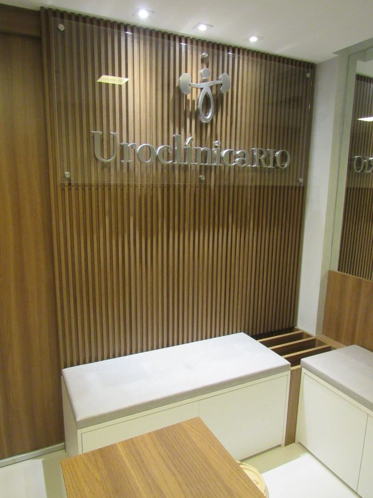
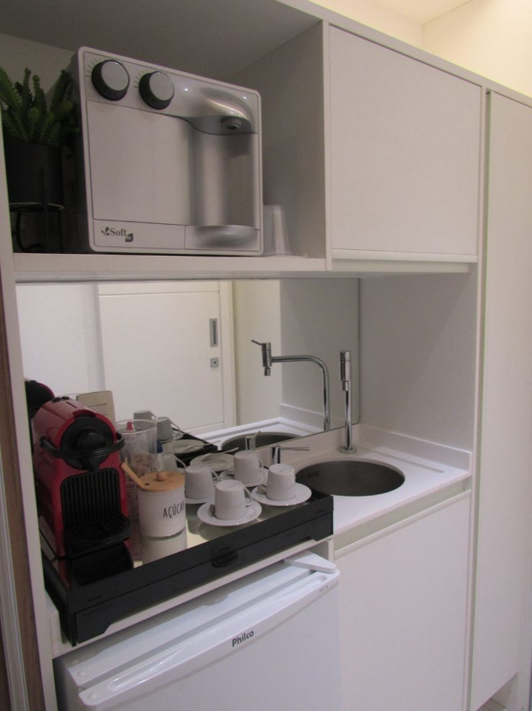

Nossa estrutura
Ambientes pensados
Ambientes pensados
para o seu conforto.
Recepção acolhedora, consultórios modernos e sala de procedimentos equipada: conheça a estrutura da UroClínica Rio, projetada para oferecer uma experiência de cuidado tranquila e segura em cada visita, com o mesmo padrão na Barra da Tijuca e em Bonsucesso.




